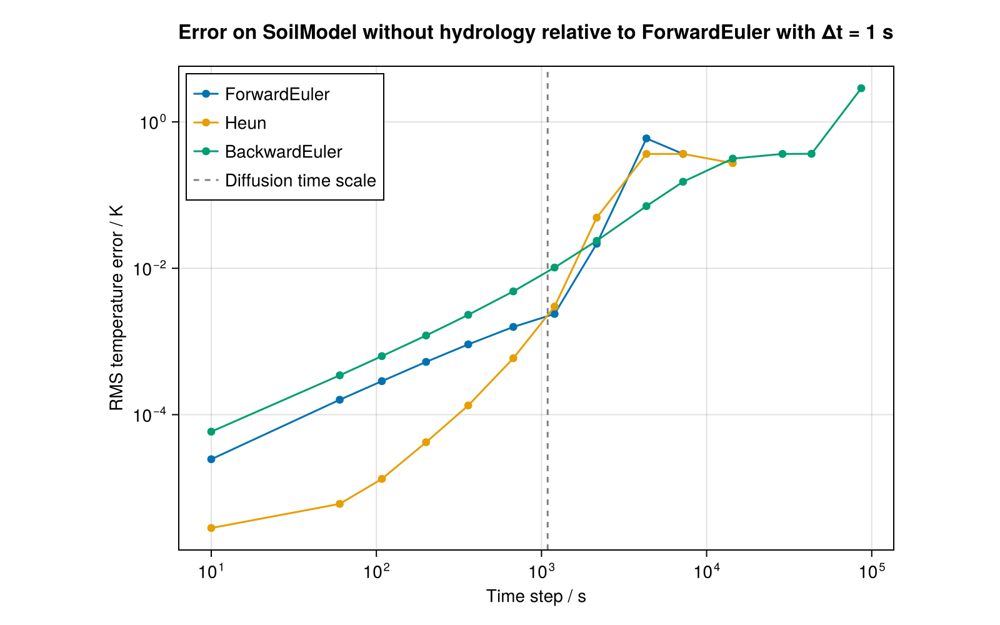
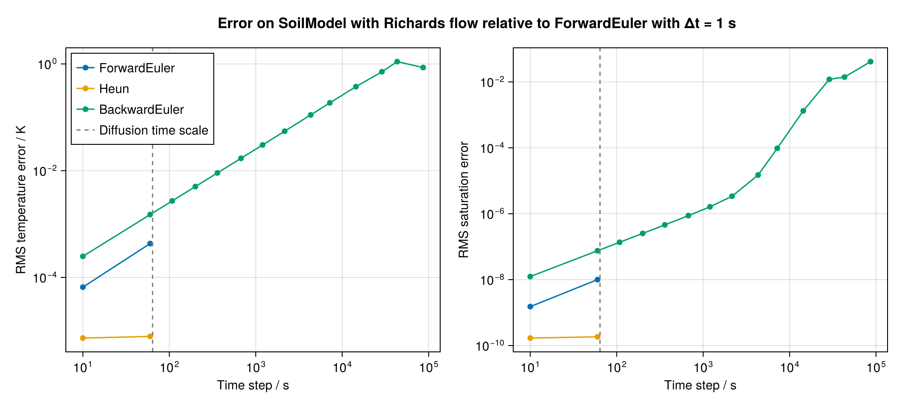
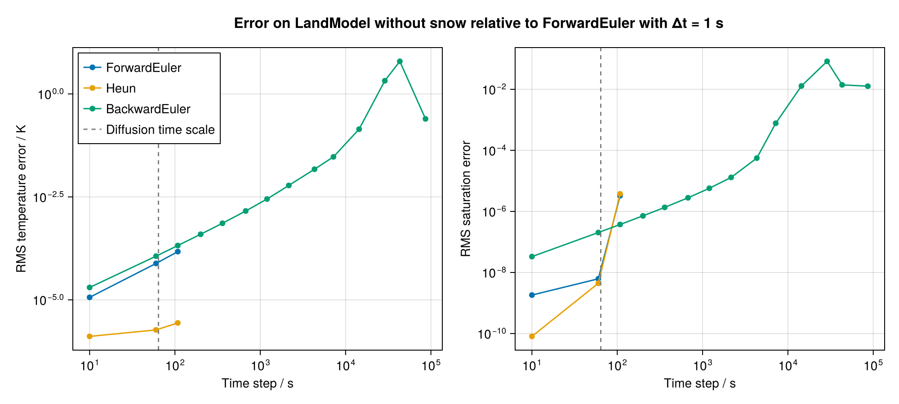

Choosing a time stepper
This example shows how to choose the time stepping scheme of a SoilModel and compares the accuracy and stability of the three schemes Terrarium provides: the explicit ForwardEuler and Heun schemes, and the implicit BackwardEuler scheme, used through an IMEX timestepper. See Time stepping for the details of each scheme.
using Terrarium
# For plotting
import CairoMakie as Makie
import DisplayAsWe use a single column with 20 exponentially spaced soil layers, the thinnest of which is 5 cm thick at the surface:
grid = ColumnGrid(CPU(), Float64, ExponentialSpacing(Δz_min = 0.05, N = 20))1×1×20 RectilinearGrid{Float64, Periodic, Flat, Bounded} on CPU with 1×0×3 halo
├── Periodic x ∈ [0.0, 1.0) regularly spaced with Δx=1.0
├── Flat y
└── Bounded z ∈ [-303.194, 0.0] variably spaced with min(Δz)=0.05, max(Δz)=100.0Setting the time stepper
The time stepper is a property of the model, set with the timestepper keyword argument. Without it, SoilModel chooses a default that depends on the soil hydrology: ForwardEuler if the soil water is immobile (NoFlow, the default), and an IMEX timestepper that integrates heat conduction and water flow implicitly if the water flow follows the Richards equation.
model = SoilModel(grid)
model.timestepperForwardEuler{Float64}(300.0)The explicit schemes take a default time step Δt (in seconds):
SoilModel(grid; timestepper = ForwardEuler(Float64; Δt = 60)).timestepperForwardEuler{Float64}(60.0)SoilModel(grid; timestepper = Heun(Float64; Δt = 60)).timestepperHeun{Float64}(60.0)BackwardEuler is an implicit scheme and is always used as the implicit partner of an IMEX timestepper, which integrates soil heat conduction (and Richards-equation water flow) implicitly and all other terms explicitly with its explicit partner. The IMEX timestepper takes its default time step from the explicit partner:
timestepper = IMEX(ForwardEuler(Float64; Δt = 3600), BackwardEuler(Float64))
SoilModel(grid; timestepper).timestepperIMEX{Float64, ForwardEuler{Float64}, BackwardEuler{Float64, Picard}}(ForwardEuler{Float64}(3600.0), BackwardEuler{Float64, Picard}(Picard(2)))The default time step can always be overridden by passing Δt to timestep! or run!, as we will do below.
Comparing the schemes
We compare the three schemes in three experiments, each run with each scheme and a range of time steps. The following function runs one simulation of ndays days of a soil model with the given soil processes, timestepper, and time step Δt, and returns the temperature and saturation profiles at the end of each day:
const day = 86400.0
function simulate(timestepper, Δt, soil; boundary_conditions, initializers, ndays = 4)
model = SoilModel(grid; soil, timestepper)
integrator = initialize(model; boundary_conditions, initializers)
steps_per_day = round(Int, day / Δt)
temperature = zeros(grid.Nz, ndays)
saturation = zeros(grid.Nz, ndays)
for n in 1:ndays
run!(integrator; steps = steps_per_day, Δt)
temperature[:, n] .= interior(integrator.state.temperature)[1, 1, :]
saturation[:, n] .= interior(integrator.state.saturation_water_ice)[1, 1, :]
end
return (; temperature, saturation)
endsimulate (generic function with 1 method)As a reference, we use ForwardEuler with a time step of one second, far below its stability limit. We test time steps from one minute to one day, spaced exponentially. Each time step is rounded to the nearest divisor of one day, so that every simulation reaches the end of each day exactly:
divisors_of_day = filter(d -> day % d == 0, 60:Int(day))
targets = exp.(range(log(60), log(day), length = 13))
Δts = unique(map(t -> divisors_of_day[argmin(abs.(log.(divisors_of_day) .- log(t)))], targets))13-element Vector{Int64}:
60
108
200
360
675
1200
2160
4320
7200
14400
28800
43200
86400We add a time step of 10 seconds, below the stability limits of both experiments, to see the convergence of the explicit schemes more clearly:
pushfirst!(Δts, 10)14-element Vector{Int64}:
10
60
108
200
360
675
1200
2160
4320
7200
14400
28800
43200
86400The error of each simulation is the root-mean-square difference from the reference over all layers and days:
rms_error(solution, reference) = sqrt(sum(abs2, solution .- reference) / length(reference))
timesteppers = [
"ForwardEuler" => ForwardEuler(Float64),
"Heun" => Heun(Float64),
"BackwardEuler" => IMEX(ForwardEuler(Float64), BackwardEuler(Float64)),
]3-element Vector{Pair{String, Terrarium.AbstractTimeStepper{Float64}}}:
"ForwardEuler" => ForwardEuler{Float64}(300.0)
"Heun" => Heun{Float64}(300.0)
"BackwardEuler" => IMEX{Float64, ForwardEuler{Float64}, BackwardEuler{Float64, Picard}}(ForwardEuler{Float64}(300.0), BackwardEuler{Float64, Picard}(Picard(2)))The following function runs a simulation with run_simulation(timestepper, Δt) for the reference and for each scheme and time step, and returns the errors:
function compare_timesteppers(run_simulation)
reference = run_simulation(ForwardEuler(Float64), 1.0)
solutions = Dict(name => [run_simulation(timestepper, Δt) for Δt in Δts] for (name, timestepper) in timesteppers)
temperature_errors = Dict(name => [rms_error(s.temperature, reference.temperature) for s in solutions[name]] for (name, _) in timesteppers)
saturation_errors = Dict(name => [rms_error(s.saturation, reference.saturation) for s in solutions[name]] for (name, _) in timesteppers)
return (; temperature_errors, saturation_errors)
endcompare_timesteppers (generic function with 1 method)The explicit schemes are only stable below the diffusive stability limit of the thinnest layer, which is of the order of its diffusion time scale (see cell_diffusion_timescale). Beyond this limit, the explicit solutions oscillate. Latent heat keeps some of them bounded near 0 °C, but most grow by many orders of magnitude or are not finite at all, and we omit those from the plots. Since the saturation stays bounded even when the solution diverges, we judge divergence by the temperature error alone:
diverged(temperature_error) = !isfinite(temperature_error) || temperature_error > 100diverged (generic function with 1 method)On logarithmic axes, a scheme of order p follows a straight line of slope p: ForwardEuler and BackwardEuler are first order, and Heun is second order. The following function plots the errors of each scheme against the time step, with the diffusion time scale as a dashed line. It omits the runs whose temperature error diverged, and all longer time steps of the same scheme, since a single step beyond the stability limit can stay bounded without being meaningful:
function plot_errors!(ax, errors, temperature_errors, diffusion_timescale)
for (name, _) in timesteppers
mask = cumprod(.!diverged.(temperature_errors[name])) .== 1
Makie.scatterlines!(ax, Δts[mask], errors[name][mask]; label = name)
end
Makie.vlines!(ax, diffusion_timescale; color = :gray, linestyle = :dash, label = "Diffusion time scale")
return ax
end
error_axis(position; kwargs...) = Makie.Axis(position; xscale = log10, yscale = log10, xlabel = "Time step / s", kwargs...)error_axis (generic function with 1 method)Experiment 1: freezing without water flow
We first consider the default soil without water flow. We drive the column with a ground heat flux that cools the soil by 40 W/m² on average, overlaid with a daily cycle with an amplitude of 100 W/m². SoilHeatFlux is positive upward (out of the soil), so the soil cools most strongly at midnight and warms around noon. Implicit time stepping does not (yet) support value boundary conditions such as PrescribedSurfaceTemperature, so we prescribe a flux instead.
surface_heat_flux(x, t, p) = p.mean + p.amplitude * cos(2π * t / p.period)
heat_flux = SoilHeatFlux(surface_heat_flux; parameters = (mean = 40.0, amplitude = 100.0, period = day))(internal_energy = (top = FluxBoundaryCondition: ContinuousBoundaryFunction surface_heat_flux at (Nothing, Nothing, Nothing),),)The wet column starts just above 0 °C, so that a freezing front enters the soil, and the top layers freeze and partially thaw again over each daily cycle. The latent heat released or absorbed at the front makes this a much harder test than heat conduction alone.
soil = SoilEnergyWaterCarbon(Float64)
initializers = (temperature = 0.5, saturation_water_ice = 0.8)
@time errors = compare_timesteppers((timestepper, Δt) -> simulate(timestepper, Δt, soil; boundary_conditions = heat_flux, initializers))(temperature_errors = Dict("Heun" => [2.8267255600065712e-6, 6.041819457954876e-6, 1.3241950139842442e-5, 4.2018111809718e-5, 0.00013352858713490677, 0.000589880657122135, 0.0029995267062368682, 0.04929148357532243, 0.36520155814661726, 0.3654164444942784, 0.2733896679977495, 1.229597837061618e19, 6.415732220777401e18, 9.224024511602895e12], "ForwardEuler" => [2.4613874621139513e-5, 0.00015992502663726693, 0.0002871792506688203, 0.0005260379669460233, 0.0009123237103612315, 0.001580947884487382, 0.002380506834334032, 0.021663201747987814, 0.594973438505259, 0.36530197581831475, 1.4221378840411304e12, 1.2952011188533854e7, 1.5865564341145402e8, 2.572194030911706e6], "BackwardEuler" => [5.8612045687275524e-5, 0.0003447438750864539, 0.0006308321685000686, 0.0012067157622639264, 0.0023134898329053104, 0.004838216443379309, 0.010241551954574815, 0.023728300752401992, 0.07078672806032055, 0.15226761384942994, 0.3156441772097982, 0.36545420777063764, 0.36694055919495905, 2.8855944331747176]), saturation_errors = Dict("Heun" => [0.0, 0.0, 0.0, 0.0, 0.0, 0.0, 0.0, 0.0, 0.0, 0.0, 0.0, 0.0, 0.0, 0.0], "ForwardEuler" => [0.0, 0.0, 0.0, 0.0, 0.0, 0.0, 0.0, 0.0, 0.0, 0.0, 0.0, 0.0, 0.0, 0.0], "BackwardEuler" => [0.0, 0.0, 0.0, 0.0, 0.0, 0.0, 0.0, 0.0, 0.0, 0.0, 0.0, 0.0, 0.0, 0.0]))Frozen soil conducts heat better and stores less of it than thawed soil, so the stability limit is set by the frozen column:
frozen_integrator = initialize(
SoilModel(grid; soil, timestepper = ForwardEuler(Float64));
initializers = (temperature = -3.0, saturation_water_ice = 0.8),
)
diffusion_timescale = Terrarium.cell_diffusion_timescale(frozen_integrator)1089.8303309941023We plot the temperature errors:
let fig = Makie.Figure(size = (800, 500))
Makie.Label(fig[0, 1], "Error on SoilModel without hydrology relative to ForwardEuler with Δt = 1 s"; fontsize = 16, font = :bold)
ax = error_axis(fig[1, 1]; ylabel = "RMS temperature error / K")
plot_errors!(ax, errors.temperature_errors, errors.temperature_errors, diffusion_timescale)
Makie.axislegend(ax; position = :lt)
DisplayAs.PNG(fig)
end
Below the stability limit, Heun is by far the most accurate scheme, until the phase change limits its convergence near the limit. At the smallest steps, its error flattens at about 3×10⁻⁶ K, the error of the reference itself: ForwardEuler at one second is only first order, with an error of about a tenth of its error at ten seconds. Beyond it, only BackwardEuler remains reliable: its error grows linearly with the time step and stays below 0.1 K for steps of about an hour. Larger steps resolve the daily cycle poorly, and a step of one day sees only the strongest cooling at midnight, since the explicit stage evaluates the surface flux at the beginning of each step.
Experiment 2: thawing of an active layer with Richards-equation water flow
We now let the soil water move according to the Richards equation. To know the porosity exactly, we use a homogeneous mineral soil with a constant porosity of 0.4 and no organic carbon:
porosity = 0.4
richards_soil = SoilEnergyWaterCarbon(
Float64;
hydrology = SoilHydrology(Float64, RichardsEq()),
strat = HomogeneousSoilStratigraphy(Float64; porosity = ConstantSoilPorosity(Float64; mineral_porosity = porosity)),
biogeochem = ConstantSoilCarbonDensity(Float64; ρ_soc = 0.0),
)SoilEnergyWaterCarbon{Float64}
├── Processes:
├──── strat: SoilStratigraphy{Float64, 1, Tuple{ConstantSoilHorizon{Float64, :soil, ConstantSoilPorosity{Float64}}}}
├──── energy: SoilThermodynamics{Float64, SoilEnergyTemperatureClosure, SoilThermalProperties{Float64, FreeWater, InverseQuadratic, SoilThermalConductivities{Float64}}}
├──── hydrology: SoilHydrology{Float64, RichardsEq, SoilSaturationPressureClosure, SoilHydraulicsSURFEX{Float64, BrooksCorey{FreezeCurves.SoilWaterVolume{Float64, Float64, Float64}, Float64, Float64}, UnsatKLinear{Float64}}, Nothing}
├──── biogeochem: ConstantSoilCarbonDensity{Float64}
We consider the thawing of the active layer above permafrost in early summer. The soil is thawed in the top 10 cm and frozen below, and a ground heat flux warms it from the surface, by 60 W/m² on average with a daily cycle of ±50 W/m², so that the thaw front moves down into the frozen ground:
thaw_heat_flux = SoilHeatFlux(surface_heat_flux; parameters = (mean = -60.0, amplitude = 50.0, period = day))(internal_energy = (top = FluxBoundaryCondition: ContinuousBoundaryFunction surface_heat_flux at (Nothing, Nothing, Nothing),),)Water infiltrates at the surface at a constant rate of 2 mm per day, and the bottom of the column is impermeable. InfiltrationFlux is a flux of saturation, positive upward, so the infiltration rate is divided by the porosity and negated. We combine the boundary conditions of both variables with merge_boundary_conditions:
infiltration = 2.0e-3 / day
richards_boundary_conditions = merge_boundary_conditions(
thaw_heat_flux,
InfiltrationFlux(-infiltration / porosity),
ImpermeableBoundary(),
)(internal_energy = (top = FluxBoundaryCondition: ContinuousBoundaryFunction surface_heat_flux at (Nothing, Nothing, Nothing),), saturation_water_ice = (top = FluxBoundaryCondition: -5.78704e-8, bottom = FluxBoundaryCondition: Nothing))The temperature decreases from 2 °C at the surface to 0 °C at 10 cm depth and −3 °C at 25 cm depth, and stays at −3 °C below. The saturation is 50% at the surface and increases linearly to full saturation at a water table at 5 m depth:
initial_temperature(x, z) = max(-3.0, 2.0 + 20.0 * z)
initial_saturation(x, z) = min(1.0, 0.5 - 0.1 * z)
richards_initializers = (temperature = initial_temperature, saturation_water_ice = initial_saturation)
@time richards_errors = compare_timesteppers(
(timestepper, Δt) -> simulate(
timestepper, Δt, richards_soil;
boundary_conditions = richards_boundary_conditions,
initializers = richards_initializers,
)
)(temperature_errors = Dict("Heun" => [7.3159868282449916e-6, 7.847347547758337e-6, 685.8477930243181, 2.7895882133805456e16, 1.4147618434749087e22, 1.0566043238750859e23, 143777.18306598053, 1.2833279902806379e73, 1.8656336329476326e98, 4.0691453472329566e73, 6.470549241346824e74, 7.221789672227001e32, 2.6148794930174745e24, 1.1889474343813394e23], "ForwardEuler" => [6.574110043284765e-5, 0.000431393752904219, 7.4083826075474e6, 7.25148620178202e7, 889.6280687272072, 2.84040820279913e8, 71937.57493214832, 1.2370561830080418e45, 2.59986029967745e64, 1.1521274977490445e43, 6.295462789504387e28, 4.012160605876713e17, 3.221632207124637e13, 2.518566318282858e11], "BackwardEuler" => [0.0002484585157015187, 0.0015060274835764118, 0.0027140525868047344, 0.005031391622446423, 0.009067201998687978, 0.017033377165553542, 0.030374854203125662, 0.054934504437046505, 0.11091775738796202, 0.186630602683415, 0.3744664899546014, 0.713762465684397, 1.103852471457402, 0.8557533593344542]), saturation_errors = Dict("Heun" => [1.688233448365668e-10, 1.8411759980358942e-10, 0.5494843278342668, 0.8347877304887233, 0.8347877304887233, 0.8347877304887444, 0.8347877304886051, 0.8230346204783306, 0.2961909605353012, 0.09758914974053412, 0.8231318465287534, 0.1041590819793383, 0.10915100301354377, 0.7277225472367536], "ForwardEuler" => [1.5168426028389607e-9, 1.0002374711785953e-8, 0.5840488431915313, 0.8234060765682776, 0.11214719813585608, 0.8230634556957168, 0.8347877304886734, 0.19610889899777698, 0.8228015888017953, 0.09758914974053412, 0.09957204728179901, 0.10589205533223989, 0.4591792329327572, 0.6020774478681786], "BackwardEuler" => [1.2394772566532807e-8, 7.532325763357237e-8, 1.359694678205905e-7, 2.529278056943303e-7, 4.585253521571758e-7, 8.746964823143001e-7, 1.619277412559762e-6, 3.395970660238813e-6, 1.4897714646523201e-5, 9.65857636184289e-5, 0.0013254586808341413, 0.01193951472080249, 0.014030068589634837, 0.041131036952764585]))The stability limit of the explicit Richards equation is much shorter than that of heat conduction:
richards_integrator = initialize(
SoilModel(grid; soil = richards_soil, timestepper = ForwardEuler(Float64));
boundary_conditions = richards_boundary_conditions,
initializers = richards_initializers,
)
richards_diffusion_timescale = Terrarium.cell_diffusion_timescale(richards_integrator)64.07820332050765We plot the errors of both temperature and saturation:
let fig = Makie.Figure(size = (1000, 450))
Makie.Label(fig[0, 1:2], "Error on SoilModel with Richards flow relative to ForwardEuler with Δt = 1 s"; fontsize = 16, font = :bold)
ax1 = error_axis(fig[1, 1]; ylabel = "RMS temperature error / K")
ax2 = error_axis(fig[1, 2]; ylabel = "RMS saturation error")
plot_errors!(ax1, richards_errors.temperature_errors, richards_errors.temperature_errors, richards_diffusion_timescale)
plot_errors!(ax2, richards_errors.saturation_errors, richards_errors.temperature_errors, richards_diffusion_timescale)
Makie.axislegend(ax1; position = :lt)
DisplayAs.PNG(fig)
end
The explicit Richards equation is stable only for steps of about a minute in this column, so both explicit schemes diverge at every longer step. At one minute, Heun is again by far the most accurate scheme. The implicit scheme remains stable at every step: its temperature error grows roughly linearly with the time step, to about 0.4 K at four hours and 1 K at half a day. The saturation error stays small until steps of about an hour, beyond which the infiltrating water is no longer resolved in time.
The time step of the implicit scheme can thus be chosen for accuracy rather than stability, while that of the explicit schemes is limited by the thinnest layer of the grid and the stiffness of the water flow.
Experiment 3: a land model under a synthetic spring day
Finally, we run a LandModel, in which the surface energy balance and the surface hydrology compute the ground heat flux and the infiltration from the atmospheric conditions. Unlike the prescribed infiltration flux of experiment 2, the infiltration is then limited to what the soil can take, so no water enters frozen soil. We leave out snow and vegetation, and use the soil and the initial state of experiment 2.
The atmospheric conditions are synthetic functions of time for a spring day: the air temperature varies between 1 °C at midnight and 11 °C at noon, the sun shines during the day, and a rain shower of about 3.5 mm falls in the afternoon:
air_temperature(t) = 6.0 - 5.0 * cos(2π * t / day)
shortwave_down(t) = max(0.0, -600.0 * cos(2π * t / day))
longwave_down(t) = 290.0 + 2.0 * air_temperature(t)
rainfall(t) = 2.0e-3 / 3600 * exp(-((mod(t, day) - 0.65day) / 3600)^2)rainfall (generic function with 1 method)Input variables, such as the atmospheric conditions, are provided to the model by InputSources, which set them at the start of the simulation and before each step (and each stage of Heun). To use functions of time, we define a small input source that evaluates a function at the time of the clock:
struct FunctionInputSource{NF, name, F} <: InputSource{NF, name}
f::F
end
FunctionInputSource(::Type{NF}, name::Symbol, f) where {NF} = FunctionInputSource{NF, varpath(name), typeof(f)}(f)
function Terrarium.update_inputs!(inputs, grid, clock, fields, source::FunctionInputSource)
set!(getproperty(inputs, Terrarium.varname(source)), source.f(clock.time))
return nothing
end
Terrarium.initialize!(inputs, grid, clock, fields, source::FunctionInputSource) =
Terrarium.update_inputs!(inputs, grid, clock, fields, source)The remaining inputs are constant: a specific humidity of 4 g/kg, a wind speed of 3 m/s, standard air pressure, and no snowfall.
weather = InputSources(
FunctionInputSource(Float64, :air_temperature, air_temperature),
FunctionInputSource(Float64, :surface_shortwave_down, shortwave_down),
FunctionInputSource(Float64, :surface_longwave_down, longwave_down),
FunctionInputSource(Float64, :rainfall, rainfall),
FunctionInputSource(Float64, :snowfall, t -> 0.0),
FunctionInputSource(Float64, :specific_humidity, t -> 4.0e-3),
FunctionInputSource(Float64, :windspeed, t -> 3.0),
FunctionInputSource(Float64, :air_pressure, t -> 101_325.0),
)InputSources{Float64, nothing, Tuple{Main.var"##323".FunctionInputSource{Float64, (:air_temperature,), typeof(Main.var"##323".air_temperature)}, Main.var"##323".FunctionInputSource{Float64, (:surface_shortwave_down,), typeof(Main.var"##323".shortwave_down)}, Main.var"##323".FunctionInputSource{Float64, (:surface_longwave_down,), typeof(Main.var"##323".longwave_down)}, Main.var"##323".FunctionInputSource{Float64, (:rainfall,), typeof(Main.var"##323".rainfall)}, Main.var"##323".FunctionInputSource{Float64, (:snowfall,), Main.var"##323".var"#25#26"}, Main.var"##323".FunctionInputSource{Float64, (:specific_humidity,), Main.var"##323".var"#27#28"}, Main.var"##323".FunctionInputSource{Float64, (:windspeed,), Main.var"##323".var"#29#30"}, Main.var"##323".FunctionInputSource{Float64, (:air_pressure,), Main.var"##323".var"#31#32"}}}((Main.var"##323".FunctionInputSource{Float64, (:air_temperature,), typeof(Main.var"##323".air_temperature)}(Main.var"##323".air_temperature), Main.var"##323".FunctionInputSource{Float64, (:surface_shortwave_down,), typeof(Main.var"##323".shortwave_down)}(Main.var"##323".shortwave_down), Main.var"##323".FunctionInputSource{Float64, (:surface_longwave_down,), typeof(Main.var"##323".longwave_down)}(Main.var"##323".longwave_down), Main.var"##323".FunctionInputSource{Float64, (:rainfall,), typeof(Main.var"##323".rainfall)}(Main.var"##323".rainfall), Main.var"##323".FunctionInputSource{Float64, (:snowfall,), Main.var"##323".var"#25#26"}(Main.var"##323".var"#25#26"()), Main.var"##323".FunctionInputSource{Float64, (:specific_humidity,), Main.var"##323".var"#27#28"}(Main.var"##323".var"#27#28"()), Main.var"##323".FunctionInputSource{Float64, (:windspeed,), Main.var"##323".var"#29#30"}(Main.var"##323".var"#29#30"()), Main.var"##323".FunctionInputSource{Float64, (:air_pressure,), Main.var"##323".var"#31#32"}(Main.var"##323".var"#31#32"())))The following function runs one simulation of ndays days of the land model, and returns the temperature and saturation profiles of the soil at the end of each day. A land model is more expensive per step than a soil model, so we simulate a single day:
function simulate_land(timestepper, Δt; ndays = 1)
model = LandModel(grid; soil = richards_soil, snow = nothing, vegetation = nothing, timestepper)
integrator = initialize(model; inputs = weather, initializers = richards_initializers)
steps_per_day = round(Int, day / Δt)
temperature = zeros(grid.Nz, ndays)
saturation = zeros(grid.Nz, ndays)
for n in 1:ndays
run!(integrator; steps = steps_per_day, Δt)
temperature[:, n] .= interior(integrator.state.temperature)[1, 1, :]
saturation[:, n] .= interior(integrator.state.saturation_water_ice)[1, 1, :]
end
return (; temperature, saturation)
end
@time land_errors = compare_timesteppers(simulate_land)
land_integrator = initialize(
LandModel(grid; soil = richards_soil, snow = nothing, vegetation = nothing, timestepper = ForwardEuler(Float64));
inputs = weather,
initializers = richards_initializers,
)
land_diffusion_timescale = Terrarium.cell_diffusion_timescale(land_integrator)
let fig = Makie.Figure(size = (1000, 450))
Makie.Label(fig[0, 1:2], "Error on LandModel without snow relative to ForwardEuler with Δt = 1 s"; fontsize = 16, font = :bold)
ax1 = error_axis(fig[1, 1]; ylabel = "RMS temperature error / K")
ax2 = error_axis(fig[1, 2]; ylabel = "RMS saturation error")
plot_errors!(ax1, land_errors.temperature_errors, land_errors.temperature_errors, land_diffusion_timescale)
plot_errors!(ax2, land_errors.saturation_errors, land_errors.temperature_errors, land_diffusion_timescale)
Makie.axislegend(ax1; position = :lt)
DisplayAs.PNG(fig)
end
As in experiment 2, the explicit schemes are only stable for steps of about a minute or two, limited by the Richards equation. The implicit scheme is stable at every step, and its errors stay small up to steps of a few hours: about 0.03 K at two hours and 0.14 K at four hours. Beyond that, the errors grow quickly, since the surface energy balance of the land model is explicit: it is evaluated at the beginning of each step and held for the whole step, so a step of eight or twelve hours that starts at midnight sees the radiation of the night for half a day. The small error at a step of one day is a coincidence of sampling the solution only once, at the end of the day. In a land model, the time step of the implicit scheme is therefore limited by the time scales of the explicitly treated surface processes rather than by the stability of the soil.
Julia version and environment information
This example was executed with the following version of Julia:
using InteractiveUtils: versioninfo
versioninfo()Julia Version 1.12.7
Commit 6d172b025e4 (2026-08-15 08:05 UTC)
Build Info:
Official https://julialang.org release
Platform Info:
OS: Linux (x86_64-linux-gnu)
CPU: 4 × AMD EPYC 7763 64-Core Processor
WORD_SIZE: 64
LLVM: libLLVM-18.1.7 (ORCJIT, znver3)
GC: Built with stock GC
Threads: 1 default, 1 interactive, 1 GC (on 4 virtual cores)
Environment:
JULIA_DEBUG = Documenter
These were the top-level packages installed in the environment:
import Pkg
Pkg.status()Status `~/work/Terrarium.jl/Terrarium.jl/docs/Project.toml`
[c7e460c6] ArgParse v1.2.0
[052768ef] CUDA v6.4.2
[13f3f980] CairoMakie v0.15.16
[0b91fe84] DisplayAs v0.1.6
[e30172f5] Documenter v1.19.0
[daee34ce] DocumenterCitations v1.5.0
[d12716ef] DocumenterInterLinks v1.1.0
[db073c08] GeoMakie v0.7.18
[033835bb] JLD2 v0.6.7
[0f8b85d8] JSON3 v1.14.3
⌅ [63c18a36] KernelAbstractions v0.9.45
[98b081ad] Literate v2.21.0
[ee78f7c6] Makie v0.24.16
[85f8d34a] NCDatasets v0.14.15
[904d977b] NumericalEarth v0.8.2
⌅ [9e8cae18] Oceananigans v0.113.6
[a3a2b9e3] Rasters v0.15.0
[d1845624] RingGrids v1.0.0
[80418d68] Terrarium v0.1.9 `~/work/Terrarium.jl/Terrarium.jl`
[b77e0a4c] InteractiveUtils v1.11.0
[d6f4376e] Markdown v1.11.0
Info Packages marked with ⌅ have new versions available but compatibility constraints restrict them from upgrading. To see why use `status --outdated`
This page was generated using Literate.jl.